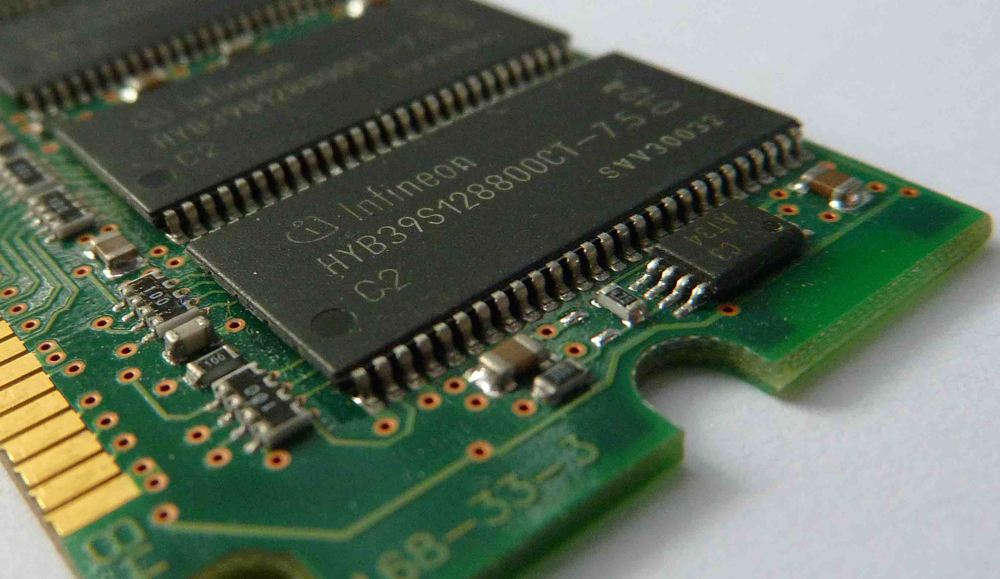

A Rendszermemória (RAM)

Mi az a RAM?
A RAM (Random Access Memory), vagyis a véletlen elérésű memória, a számítógép "rövid távú emlékezete". Itt tárolódnak azok az adatok, amelyekre a processzornak (CPU) azonnal szüksége van a futó programok és az operációs rendszer működtetéséhez.
Miért fontos?
A RAM sebessége és mennyisége közvetlenül befolyásolja a számítógép teljesítményét. Ha több RAM áll rendelkezésre, több alkalmazást futtathatsz egyszerre lassulás nélkül (multitasking). Játékoknál és nagy teljesítményigényű szoftvereknél elengedhetetlen a megfelelő mennyiségű memória.
DDR Generációk
A RAM-ok fejlődése generációkban mérhető (Double Data Rate):
- DDR4: A legelterjedtebb szabvány az elmúlt években. Megbízható, jó ár-érték arányú.
- DDR5: A legújabb technológia. Sokkal magasabb órajeleket és sávszélességet kínál, ami elengedhetetlen a modern csúcsgépekhez.